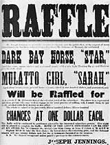
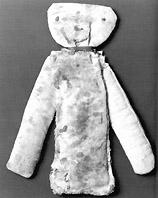
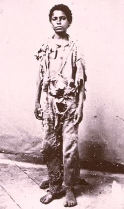

|
We have virtually no concept of what life was like for children born into
slavery in the seventeenth century, and very little more insight into their
lives during the early colonial period. We do know that the family was very
important to West Africans, and almost all African societies represented in the
American colonies had specific rituals attached to childhood. Presumably, many
West Africans brought their rituals and values with them when they arrived in
North America.
What emerges is a composite picture, but we must keep in mind that we are
faced with specific attitudes and behaviors on large plantations, small farms
with only a few slaves, and cities where slave fathers were primarily artisans
and slave mothers were primarily house servants. Further complications arise in
analyzing behavior and attitudes over time. This means that, from the West
African background to the Civil War, life for slave children undoubtedly changed
a great deal. In addition, we must create a synthesis which includes piedmont,
tidewater, Deep South, old colonies, and new states. Slaves worked in labor
intensive areas, such as rice fields in coastal South Carolina and cotton fields
in Mississippi. The gradual spread of slavery to the west involved children in
migrations and in resettling new, uncultivated areas.
|

A poster advertising a raffle of a horse and a slave girl,
with the horse getting top billing. Raffles were a popular way to sell slaves,
particularly those whose market value was low.
|
After the Revolutionary war, between 1790 and 1810, 15,000 Africans were
imported into South Carolina; 48,000 into Georgia; and 18,000 into Mississippi
and Louisiana. In those decades (and earlier) a constant influx of African
traditions was mixed with the ongoing culture formed by slaves who had long been
in those states. This same mixture of old slaves and new Africans occurred
elsewhere, although in ever lessening numbers by the nineteenth century. The
African concept of kinship--close family ties between grandparents, uncles,
aunts, and the extended family--came with Africans and stayed with them as
slaves. Children growing up in slave families were part of a loving and close
family group unless members of their family were sold away. As time went on,
families were broken up most often by selling members to the south and the west
where the demand was great. In this case, children lost not only distant kin,
but sometimes their own mothers and fathers. Slave owners, however, did often
make an attempt to sell mothers and small children together. Some slave men
begged to be sold with their wives and children, but if sale occurred, most
often fathers were sold away separately. Owners like Thomas Jefferson believed
that slaves were more productive when families were intact; they made an effort
to keep them together. But sometimes slave women married men on distant
plantations, and then the concept of family was an impossibility--unless one or
the other owner bought the spouse.
On large plantations slave mothers returned to the fields soon after their
babies were born. Nurseries for these babies and younger children were run by
old slave women who were no longer able to go to the fields themselves. Some
nurseries contained as many as sixty children with ages ranging from a few weeks
up to eight or twelve years old. Mothers usually came from the fields four times
a day to nurse their babies; when babies were weaned they saw their mothers and
fathers only in the early hours of the morning before they went to the nursery,
and late at night after their parents returned exhausted from the fields.
Sundays and holidays were the only time families were together, and even then,
parents were often involved in working private plots of land, family laundry,
and housekeeping chores. Wintertime meant more time for the family on some
plantations. On small farms, where there were few slaves, year-round activity
was the norm. Children also grew into sources of labor more quickly on small
farms, learning early to do chores for their masters and mistresses.
|

This doll belonged to a child on a South Carolina plantation.
Few slave toys still exist.
|
In the plantation nursery young children were frequently involved in child
care themselves. It was not uncommon for children aged seven and older to have
almost total supervision over two or three tots. The nurseries were located in
the slave quarters and featured crowded facilities with no games or toys, as we
know them. In the worst places, it has been reported that babies and children
were fed in troughs two times a day. In the best, children ate off tin plates.
Most slave children seemed to have diets consisting of cornmeal mixed with
scraps or meat and whatever vegetables, if any, the old women could get.
Standard childhood diseases--measles, whooping cough, and diphtheria--made
periodic appearances in the nursery. Some old women treated children with local
herbs or boiled roots. On other plantations, doctors attended sick children, but
death rates were frequently high among them no matter the treatment.
Education was limited. Perhaps a few children learned Bible stories in the
nursery. On some plantations, mistresses taught their slave children Bible
stories on Sundays. The rare plantation mistress taught slave children to read
and write--but as the decades passed, education was equated with troublesome
slaves and was all but prohibited. Slave children often played with masters'
children when they were very young; at school age, the white children went off
by day and the slave children began to learn the rudiments of work. Some whites
shared their early learning with their slave counterparts, usually beyond sight
of their parents. The education slave children received came from their own
families and consisted of lessons which prepared them for adulthood. They were
taught respect for both black and white elders. They were forced to obey family
members so that when they grew up they would obey masters and overseers and stay
out of trouble.
Discipline was strict in the slave quarters. On large plantations masters did
not generally interfere with slave life there, but on smaller farms some slaves
remembered being whipped by their mistresses when they were small. Most mothers,
and fathers if they were present, switched their children for minor infractions
of rules. If a child was rebellious or difficult, he received a severe beating
from one or both of his parents. If a child was especially difficult and his
behavior came to the attention of his master, he could be punished--or worse.
Parents were aware of this possibility and did all they could to instill
personal discipline in their children.
Slave children had few items of clothing. Some little boys wore dresses--the
same as worn by girls--until they were about ten years old. In hot climates,
slave children often went naked until they reached seven or eight. Most wore
homespun clothes which were heavy and uncomfortable. Those who lived on big
plantations might have a Sunday outfit which they wore to church or to the Big
House, where they visited their masters and mistresses. Sundays were almost
always free days for slaves, and it was on those days that slave children played
the few games that were available to them.
|

On those occasions when children were
issued clothing, it was generally of very poor quality.
|
"Swingin' in de corner" was played in Georgia. "Hide the Switch" and "Hide
and Seek" were played by slave and free children--often together. Almost all
children had a few marbles and some pitched horseshoes. Little girls liked to
jump rope. At Christmas and Easter there were likely to be celebrations and
maybe a toy from owners. Fathers taught their sons to trap, hunt, and if a lake
or stream was available, to fish. House servants often gave their children
special treats from the kitchen, and an occasional master brought a few sweets
to slave children after a provisioning trip to town. For most slave children,
life was relatively carefree, if impoverished, until they went to work.
By the age of eleven or twelve slave children began learning to work. Boys
often started out in the stables, or were sent as messengers between
plantations. Girls began helping in the Big House, waiting tables, or caring for
a young mistress from the age of ten and older. One woman remembered "totin
water to de fields" when she was but a tot. If fathers were artisans, they
taught their skills to their sons. Slave children's indoctrination into the
plantation regime varied according to the crop being produced. On sugar
plantations, for example, children were less useful in the fields than on
tobacco or cotton farms, where they could help with the picking at the busiest
time.
Values placed on slave children give some indication of their skills at a
certain age. One master valued his fourteen-year-old slave girl at the same
price as a forty-year-old woman. Another valued his sixteen-year-old blacksmith
apprentice at half the value of a senior smith. But even very young children had
a value--one master in the 1850s placed one hundred dollars on his
seven-year-old female slave. She was "alright, but a great liar." Babes in arms,
if in good health, were then worth about the same price.
If children had a sale value, it was because on occasion they were sold. One
little girl of seven was burned by her youthful mistress, and because of her
rebellious spirit, was sold south alone. In 1834 a North Carolina dealer
advertised children from the age of ten and up for sale. Sale of children from
thirteen to sixteen was common, and a few young girls were sold as concubines.
In the domestic slave trade, when children were moved to the south or west, and
during migrations with families, small children rode in wagons while men and
women walked alongside. Many little bodies were packed together, and rations
were even more limited on the road. When a move took place, or if fathers were
sold away, mothers usually maintained care over their children until they were
old enough to be sold or begin families on their own. Girls married (or
cohabited) when they were young--usually in their midteens--and they soon began
bearing children, reestablishing the circle of bondage which was common to all.
Source: Randall M. Miller and John David Smith, eds. Dictionary of
Afro-American Slavery (Westport, CT: Praeger, 1997), 99-103.
|